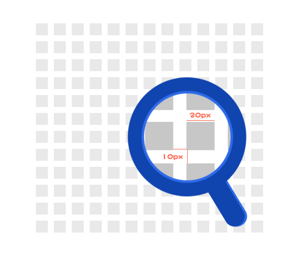

视觉设计
栅格系统
-
全站宽度统一定为980px，栅格单元为20px，栅格间距为10px，页面设计时按栅格节点（以5px倍数为节点）进行设计。
图1（此图为栅格的一部分）
布局
-
横向一屏作为一个整体，无论内部如何细分，总体应该高度一致。
图1图2 -
版块有明显界限（如：版块有边框或有明显背景色等情况）时，页面避免出现此类布局，错落让视线反复探索，不利于阅读。
图3图4 -
纵向划分时区块之间保持分栏的统一性，避免出现上下不统一。
图5图6 -
在设计文章页的时候需把引题、副标题和归专题的位置都考虑进行去，在设计稿上体现出来。
图7
根据近期百度新闻需要重新梳理所抓取到的新闻源，在设计文章页的时候要把来源、作者、时间、编辑的标签优先级放在标题与正文之间。编辑标签可以在文尾。稿源时间一定要按照2014-02-17 02:25:22格式来设计，作者一定要按照记者、特约记者、作者、评论员这几个名字来。具体相关请参照文档
间隙
-
全站区块间距统一为5的倍数，10px为最佳，最大不能超过25px。内容间距不能大于区块间距。
图1图2
图片
-
图片尺寸为：宽x高(width*height)，均为20的倍数，最小为40px，最大为560px。
-
图片以宽高比分成五类，A类为1:1，B类为16:9，C类为4:3，D类为3:4，E类为9:16。
图1 -
为便于运营后期维护编辑，在页面设计时必须优先使用以上介绍的尺寸。以图片展示为主的页面，根据页面排版需要，可只遵循图片A-E类的比例进行设计。
-
在同一页面设计中建议不要使用超过4种尺寸的图片。
-
切割时调用北方网上标准图片链接进行引用，方便编辑通过图片位得知尺寸。
-
图片引用地址：http://aspnet.zjol.com.cn/design/demoImg/A100x100.jpg （实例图片为A类100x100），只需修改demoImg/后面的图片类名加尺寸就可以正常读取。
-
设计稿中没有调用标准图片，就在alt中写出图片尺寸大小。
-
横向图片，适用于新闻图片、资讯幻灯等。
-
1：1图片，适用于展示人物头像、list图片展示等。
-
竖向图片，适用于模特、人像等。
-
频道LOGO高度为30px，在线LOGO和频道名之间的距离为2px；频道名的字体大小为22px， 频道名和频道标语之间的间距为10px， 频道标语的字体大小为16px。
-
频道LOGO统一由设计部制作，已有栏目品牌的频道暂不做修改，其余频道改版后均采用统一频道LOGO。
颜色
-
在进行一般性页面设计时基本执行此标准，遵循有规律的原则。
-
频道文字需要添加个性色时，可在正常状态下局部定义，鼠标移入时状态应该保持与规范统一。
 图1
图1 图2
图2
字体
-
建议都使用微软雅黑，其中导航、大标题、块级标题、吊顶、尾部信息必须使用微软雅黑。
-
吊顶、尾部信息、说明、注释、新闻列表的时间等使用大小为12px的字体。
-
字体大小均为偶数，最小字体为12px，最大字体为34px。
-
需要更大字号时可以跟据偶数原则自定义。
表单
-
输入框要按照一定的规格来设计。
图1 -
按钮要按照一定的规格设计。按钮一定要有两种状态，正常状态和盘旋状态。
图2
后期工作
-
将最终设计稿保存成jpg格式，需要标出所有大小、间距、行距等进行展示，前端开发接手时能直接写代码，不需要再测算页面上所需要数据。附录：size标注样本
图1 -
采用CSS Sprites把素材图片（同一区域内或者同类型）放在一张png上，并把图片坐标等数据记录在文档中。
图2 -
切出网页代码所需要的所有素材图片。
-
特殊的字体用psd里的注释标注特殊字体。
图3 -
标图片的size时,以图片类名 宽*高的形式出现。如：B 40*25。
-
标尺寸时遇到有边框的块，减内边距。
前端开发
命名规范
-
文件名、文件夹名称统一用小写的英文字母、数字和下划线（不是“-”）的组合，其中不得包含汉字、空格和特殊字符。命名原则：一是使得你自己和工作组的每一个成员能够方便的理解每一个文件的意义，二是当我们在文件夹中使用“按名称排列”的命令时，同一种大类的文件能够排列在一起，以便我们查找、修改、替换、计算负载量等等操作。
-
内部元素尽量做到见名知其意，使用骆驼命名法（第一个单字以小写字母开始；第二个单字的首字母大写。例如：firstName、lastName类名、id名不要使用标签名或者属性名，例如：
<div id=“div”>，<div class=“table”>，<div class=“name”>类似这样的命名都是不符合规范的。命名应该尽量以常见的英文单词为准，做到通俗易懂，并在适当的位置写上注释信息，以方便理解。 -
网站结构规范必要的几个文件夹：css、js、images，主要是为了存放相关的网页素材，原则上一种类型一个文件夹，不允许多建，过多建立会使网站结构太过复杂。
图1
代码规范
-
最终一个html页面只能包含一个<html>、<head>、<body>元素。在北方网转码时，
<!--#include virtual="zjc_top2013.html" -->这些引用标签中的代码不能包含<html>、<head>、<body>元素。 -
必须定义DOCTYPE。推荐使用html5的定义方法：
<!DOCTYPE html> -
必须指定字符集：所有的HTML文档都必须在
<head>中最前面声明推荐使用html5的定义方法：<meta charset="GB2312">。 -
不使用IE特定版本来渲染页面，应做好所有浏览器兼容性检查。如：
<meta http-equiv="X-UA-Compatible" content="IE=EmulateIE7"/>禁止使用。 -
title、keywords、description相关注意事项：“title”“keywords”“description”必须使用全小写。title标记应采用“_”（半角英文状态下的下划线）分割主关键词，或“-”（半角英文状态下的减号）分割关键词后面的标题描述。关键词数量在2-3个最为合适， 不应超过40字符。第一个主关键词搜索引擎抓取的权重是最重要的，设置成频道的名称（必写），如：浙江潮评论，后2个关键词，可用百度指数搜索有相关性指数的长尾关键词，如：新闻评论、时事评论。最后统一添加：浙江在线（必写），例如：
<title>浙江潮评论_新闻评论_时事评论_浙江在线-浙江第一门户网站</title>keywords禁止用空格来分割主关键词，不应超过80字符。可以将title的关键词以及一些有百度指数的频道名或栏目名加入，例如：<meta name="keywords" content="评论,新闻评论,时事评论,观点,浙江潮,浙江在线评论,每日评论,浙江在线">description内容描述，不应超过150字符，内容描述中需出现title关键词1-2次，例如：<meta name="description" content="浙江潮评论是浙江最有影响力的新闻评论与时事评论平台,收集社会各界对新近发生的新闻事件所发表的言论，提供包括时事、财经、科技、体育、文化、娱乐各类评论分析文章,深度的解析,新颖的观点,专业的评论。"> -
样式表调用方法：在符合web标准的设计中，应使用外部调用法，调用方法如下
<link href="css/xxx.css" rel="stylesheet" type="text/css" /> -
选用恰当的标签：
根据文档的结构来选择HTML标签， 禁止根据HTML元素的样式来选择标签， 例如：把p标签当作空行，这是不符合规范的。
少量、恰当的使用div和span标签可以使文档的结构更加清晰合理并且易于控制样式，尽可能少地使用标签嵌套。
-
选用合适的类：
在ul这里要定义类，li a可用子选择器
Img建议添加类
公用的类写在公用的地方
-
html注释: 注释格式
<!--这儿是注释-->, '--'只能在注释的始末位置，不可置入注释文字区域。 -
css注释：注释格式
/*这儿是注释*/ -
JavaScript注释：单行注释格式
//这儿是单行注释多行注释格式/* 这儿有多行注释 */ -
大区块代码必须添加注释, 小区块代码适量添加注释。
-
要随时写注释，每个块都要有开始和结束标记，方便阅读，注意注释的书写规范。
-
单向友情链接，需在代码上加入nofollow标签:
<a href=“http://www.daidu.com” rel=”nofollow” ></a> -
友情链接以相关性网站为最佳，在做友情链接的同时需查看对方网站是否被百度降权或者K站，如有类似情况不能继续采用此网站链接。
-
为了保证不同浏览器的字体大小一致，字体单位要用像素px来定义。
-
css类名、id名区分大小写，id名必须是当前文档中唯一。
-
尽量避免写CSS hack。
-
新开窗口必须添加target="_blank"，当前窗口打开可以不添加target="_self"；频道导航的各栏目以及导航条上的首页为当前窗口打开。
-
对于img标签，一定要使用alt属性，示例代码：
<img src="images/eg_tulip.jpg" alt="鲜花港-郁金香" /> -
不要在网页上使用多于一个的 ；不要使用全角空格，空白应该尽量使用 padding, margin,text-indent。
-
为了最大程度的发挥浏览器自动排版的功能，在一段完整的文字中请不要使用<br>来人工干预分段。
-
书写代码前, 进行详细规划，提高样式重复使用率。
-
素材图片使用CSS Sprites技术, 减小http请求, 考虑到多人合作开发，CSS Sprites按区域制作。
-
图片悬停如果没有特殊效果，默认为80%透明。
-
网页在各版本浏览器的预览效果要一致，其中包括IE6、IE7、IE8、IE9、IE10、Chrome、Safari、Firefox、Opera。
-
去掉焦点框。
-
完整定义所有边距、内边距、行距及区域长宽等。
-
注意图片命名规范，版块名_版块区域.png，例如：map_btn.png。
-
北方网使用注意事项
a)遵循上面提到的网站结构规范，一个频道只建立一个images、css、js等分类文件夹。
b)专题代码统一写在“附加正文2”，添加完整的title、keywords、description。
-
不管是设计稿还是最终代码都要遵循栅格系统。
-
一切以用户体验为先，只有优化了用户体验才能考虑如何创新。
-
注意所有命名的规范，包括文件名、图片名、类名、id名等。
-
尽量减少图片的使用，可以用代码完成的，一定要用代码实现。
-
广告、统计等引用外部链接的js代码需写在文档最下面</body>上，以免影响整个页面加载。
-
用png格式时，IE6需要做特殊处理。
-
如果设计稿需印刷，新建PSD要选择CMYK模式。
-
完成代码之后，要对整个页面进行截图。
-
频道没有使用统一logo，并且头部有通栏图，调用
<!--#include virtual="/05zjol/sitemap/top.html"-->图1频道使用统一logo，头部有通栏图，调用
<!--#include virtual="/05zjol/sitemap/topnavnologo.html"-->图2频道没有使用统一logo，头部无通栏图，调用
<!--#include virtual="/05zjol/sitemap/topnonav.html"-->图3频道使用统一logo，头部无通栏图，调用
<!--#include virtual="/05zjol/sitemap/topnologo.html"-->图4调用底部代码
<!--#include virtual="/05zjol/sitemap/bottom.html"-->调用统一吊顶、头部、底部，需要调用的CSS
<link href="/05zjol/sitemap/css/index.css" rel="stylesheet" /> -
如果页面里没有调用统一底部代码，前端一定要在底部下面加上流量统计代码：
<script type="text/javascript" src="/05zjol/js/2009/tjBrowser.js"></script> -
广告代码等需放于整个页面代码的最后，并且用注释隔开。
-
在转北方网的时候是否加主目录，加与不加是看频道管理的域名信息是否有主目录
图5 - 全局样式：global.css/all.css（包括头部header和尾部footer以及导航nav）
- 首页内容样式：index.css
- 登录页样式：register.css
- 主分页的样式：layout.css
- 头：header
- 内容：content
- 尾：footer
- 容器: container/box
- 页面主体：main
- 导航：nav
- 侧栏：sidebar
- 栏目：columns
- 左右中：left right center
- 导航：nav
- 主导航：mainNav
- 子导航：subNav
- 顶导航：topNav
- 边导航：sidebar
- 左导航：leftSidebar
- 右导航：rightSidebar
- 菜单：menu
- 子菜单：subMenu
- 标题: title
- 摘要: summary
- 标志：logo
- 广告：banner
- 登录条：loginBar
- 登陆：login
- 注册：regsiter
- 搜索：search
- 功能区：shop
- 标题：title
- 加入：joinUs
- 状态：status
- 按钮：btn
- 滚动：scroll
- 标签页：tab
- 文章列表：list
- 提示信息：msg
- 当前的: current
- 小技巧：tips
- 图标: icon
- 注释：note
- 指南：guild (guide)
- 服务：service
- 热点：hot
- 新闻：news
- 下载：download
- 投票：vote
- 合作伙伴：partner
- 友情链接：link
- 版权：copyRight
其他相关工作
模板精选
网页模板

移动端模板
其它注意事项
根据近期百度新闻需要重新梳理所抓取到的新闻源，通过对“时间、来源、记者、编辑”等关键稿件要素添加特殊识别ID，对稿件页面抓取进行优化。具体相关请参照文档